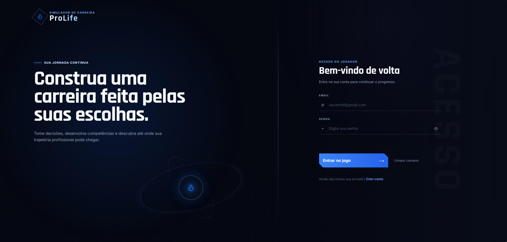

SIMULADOR DE CARREIRA / 01ProLife.
Suas escolhas
falam por você.

FULL STACK / ENTRA21 / CONCLUÍDO
ProLife
Um simulador de carreira em que cada decisão importa. Uma jornada gamificada que transforma escolhas em um relatório de análise comportamental.
Acessar ProLife ↗